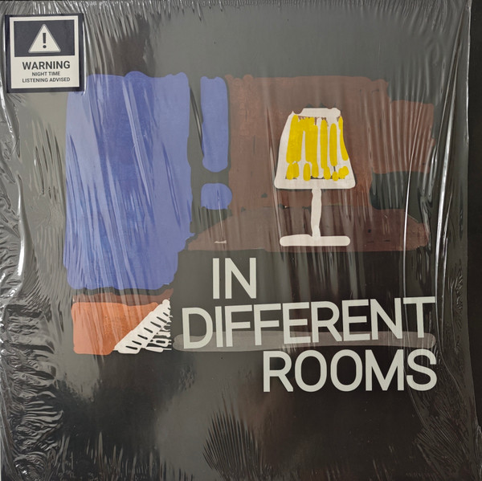

← 返回目录  Rubey Hu In Different Rooms 年份2025 厂牌Music That Shapes 编号MTS-N 1002-1 风格Ambient / Minimal 载体LP 价格¥158 胡睿的首张个人专辑，2025年2月通过斯洛伐克厂牌Music That Shapes发行。八首曲目在环境与极简之间游走，以声音构建出一系列私密的空间想象。黑胶版限量发行，豆瓣满分评价。 ▶ 试听 ▶ 试听 ▶ 试听 ▶ 试听